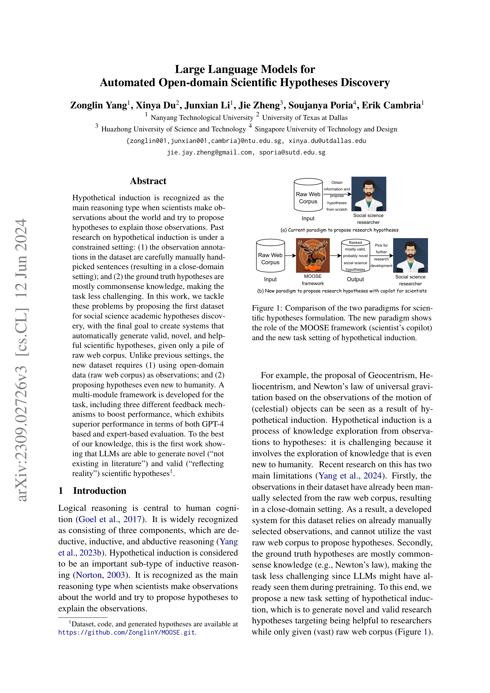

저자: Zonglin Yang, Xinya Du, Junxian Li, Jie Zheng, Soujanya Poria, Erik Cambria | 날짜: 2023 | Link: https://arxiv.org/abs/2309.02726

Figure 1
LLM을 활용하여 open-domain raw web corpus로부터 자동으로 과학적 가설을 생성하는 최초의 시스템을 제안한 연구이다. 기존의 closed-domain, commonsense 수준 가설 생성과 달리, 사회과학 분야에서 '문헌에 존재하지 않는' novel하고 valid한 가설을 LLM이 생성할 수 있음을 GPT-4 및 전문가 평가를 통해 최초로 입증했다.
Abstract에서 추출된 독창성 문장: In this work, we tackle these problems by proposing the first dataset for social science academic hypotheses discovery, with the final goal to create systems that automatically generate valid, novel, and helpful scientific hypotheses, given only a pile of raw web corpus.. Unlike previous settings, the new dataset requires (1) using open-domain data (raw web corpus) as observations; and (2) proposing hypotheses even new to humanity.. A multi-module framework is developed for the task, including three different feedback mechanisms to boost performance, which exhibits superior performance in terms of both GPT-4 based and expert-based evaluation.. To the best of our knowledge, this is the first work showing that LLMs are able to generate novel (''not existing in literature'') and valid (''reflecting reality'') scientific hypotheses.
총평: Open-domain에서 LLM 기반 과학적 가설 자동 생성이라는 새로운 연구 방향을 개척한 의미 있는 work이다. Task 정의와 dataset 구축의 기여가 크나, 생성된 가설의 실증적 검증과 도메인 일반화에 대한 후속 연구가 필요하다.